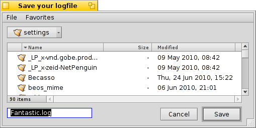

Português (Brazil)
Português (Brazil) Català
Català Deutsch
Deutsch English
English Español
Español Français
Français Italiano
Italiano Magyar
Magyar Polski
Polski Português
Português Română
Română Slovenčina
Slovenčina Suomi
Suomi Svenska
Svenska 中文 ［中文］
中文 ［中文］ Русский
Русский Українська
Українська 日本語
日本語 Aplicações em linha de comando específicas do Haiku
Aplicações em linha de comando específicas do Haiku
| Localização: | /boot/system/bin/ /boot/system/non-packaged/bin/ ~/config/bin/ ~/config/non-packaged/bin/ |
All commandline applications shipped with Haiku are in /boot/system/bin/. Your own or additionally installed commandline apps will appear there as well, or in ~/config/bin/, when installed from a .hpkg package. Otherwise you can put them into /boot/system/non-packaged/bin/ or ~/config/non-packaged/bin/. All these locations are part of the PATH variable and are therefore automatically found.
The following isn't an exhaustive list of all Haiku-specific CLI apps, it serves just to highlight a few of the most useful to give you a taste. Feel encouraged to explore what's in the bin/ folders on your own a bit. Executing an app with the parameter --help shows the usage of the command and all its various options.
 Relacionados aos atributos: listattr, catattr, addattr, rmattr, copyattr
Relacionados aos atributos: listattr, catattr, addattr, rmattr, copyattr
Estes comandos são utilizados para exibir, ler, adicionar e remover atributos de arquivos. Lembre-se que estes metadados são atualmente apenas disponíveis em volumes formatados em BFS. Mover arquivos para outros sistemas de arquivos irá eliminar todos os atributos!
Todos estes comandos são descritos no tópico Atributos no Terminal.
Relacionados ao índice: lsindex, mkindex, reindex, rmindex
Com estes comandos pode-se listar, gerar, reindexar e remover atributos para o indexador do BFS. Todo volume tem seu próprio índice, lembre-se disso quando copiar arquivos de um volume para outro.
Estes comando são descritos no tópico Indexação.
Relating to package management: package, pkgman
The package command is used to manage HPKG packages. Have a look at the article Installing applications to learn the very basics. Usually the tool haikuporter is used to automatically create packages from so-called recipes.
pkgman is used to search, install, update and uninstall packages. Package repositories can be added, dropped and their package lists refreshed. A special kind of update is invoked with the parameter full-sync: it is more aggressive and also downgrades or removes packages, if necessary.
For more details on a parameter, append "--help", e.g. pkgman search --help.
Comandos de scripting úteis
Aqui estão umas poucas ferramentas de linha de comando que são especificamente úteis para scripting (veja também o tópico Bash e Scripting).
alert | alert evoca a janela típica de alerta com um ícone predefinido, texto explicativo e até três botões. Ela irá retornar o título do botão pressionado e um status de saída (comaçando com 0). Por exemplo, isto pe feito da linha: alert --idea "FantasticApp(tm) installado com sucesso! \ Gostaria de um atalho para ele?" "Na Área de Trabalho" "No Deskbar" "Não, obrigado"
| |
filepanel | filepanel exibe uma caixa de diálogo de abrir ou salvar arquivo e permite ao usuário escolher um arquivo ou localidade. Como um valor de retorno obtém-se o arquivo escolhido ou o caminho da pasta. Existem muitos parâmetros disponíveis, por exemplo para definir um diretório inicial, um título de janela, um nome padrão ao salvar ou restrições para os tipos de arquivos permitidos. Este é um exemplo de filepanel -s -t "Salve seu arquivo de log" -d ~/config/settings -n Fantastic.log  | |
hey | hey is a littler helper tool that sends BMessages to applications and prints out their answer. It can be used for application scripting, i.e. "remote controlling" a program from a script or the command line. It's usage is a bit complex... Humdinger's blog post serves as a good introduction, and thanks to Scot Hacker's BeOS Bible, there is a much more comprehensive hey tutorial by Chris Herborth. | |
notify | notify shows a notification panel with a message. There are various parameters that are described when you call notify --help. A notification can also be used to show the progress of some action. When doing that, it's important to set a messageID and always use it when you update the progress (a float between 0.0 and 1.0 that's printed as percent). Otherwise you'll see several notification panels if you update quicker then the set timeout. notify --type progress --group "--group" --title "--title" --icon /boot/home/bebook.hvif \ --messageID MyMessageID --progress .75 "Keep waiting"
| |
query | query é a versão em linha de comando da janela Procurar. Na verdade, uma maneira rápida para gerar o termo de pesquisa é construir uma consulta na janela Procurar, converter para , adicionar aspas duplas (") no início e no fim e colar a sequência inteira após o comando query no Terminal ou no seu script. | |
waitfor | waitfor é uma maneira elegante de aguardar por um aplicativo particular ou tarefa ser iniciado ou até ter terminado. |


Outros comandos
checkfs | checkfs is an important tool to check for errors in your file system. Simply add a volume name like /Haiku or device path and it'll run through every file and correct inconsistencies where possible. | |
desklink | desklink pode instalar um ícone para qualquer arquivo, pasta, consulta ou aplicativo na bandeja do Deskbar. Ele também oferece a opção de prover um menu de contexto quando clicar com o botão direito do mouse em um ícone para executar ações especiais. Como um exemplo, tente isto para adicionar o aplicativo de linha de comando screenshot com várias opções (a "\\" na primeira linha é apenas para a quebra de linha no Terminal): desklink "cmd=Active window (2s):/bin/screenshot --window --border --delay 2" \\ "cmd=Remove replicant:desklink --remove=screenshot" /bin/screenshot
| |
diskimage | diskimage permite registrar um arquivo regular como um dispositivo de disco. Por exemplo, pode-se registrar uma imagem anyboot do Haiku, montá-la no Rastreador e copiar, editar ou remover arquivos lá antes de usá-la como fonte no Instalador. | |
launch_roster | The launch_daemon starts all sorts of services and applications at boot-up. For some it was instructed to re-start them if they were quit. If you don't want that – maybe you'd like to test a modified Tracker, for example – you use launch_roster to stop the re-starting of the application before quitting it. Similarly, you can start it again or get info about it.c The parameter log prints out a log of all launch_daemon related events. launch_roster stop x-vnd.be-tskb | |
mountvolume | mountvolume is preferred by many to mount local partitions and disks, because its usage is so easy: just call it with the name of the partition and you're done. Try --help for more options. mount can additionally mount remote disks by using a network filesystem, like NFS4. You specify the used filesystem with the -t parameter and the remote location with the -p parameter. As filesystem parameter you can use anything you find in /system/add-ons/kernel/file_system (and corresponding file hierarchies under ~/config or "non-packaged", of course). You also have to create a folder as mountpoint. Here's an example: mkdir -p /DiskStation mount -t nfs4 -p "192.168.178.3:volume1" /DiskStation | |
open | open é uma pequena ferramenta muito prática. Com ela abre-se qualquer arquivo com seu aplicativo preferido, ou inicia um aplicativo específico pela sua assinatura sem a necessidade de conhecer seu caminho exato. Ela também trabalha com URLs e até com os diretórios "virtuais" . para o diretório atual e .. para o superior, abrindo a pasta no Rastreador. | |
ramdisk | A ramdisk is like a harddisk running only in the computer's memory. That makes it very fast but also volatile, because its contents vanishes when you shut down the computer, or it crashes or you experience a blackout. ramdisk create -s 1gb mkfs -q -t bfs /dev/disk/virtual/ram/0/raw RAMses mountvolume RAMses Note: When creating a ramdisk, the ramdisk command prints out the path to it. If you create several disks, that path /dev/disk/virtual/ram/0/raw will change! To preserve the contents, at least if no calamity like a blackout etc. strikes, a ramdisk can be set up to read/write an image on the harddisk. For that, you need to supply a file of the desired size that will be read from every time you start your ramdisk, and written to when you unmount it. To create an image file "RAMimage" of 500MiB and format it, do this: dd if=/dev/zero of=RAMimage bs=500M count=1 mkfs -q -t bfs /dev/disk/virtual/ram/0/raw RAMimage From now on, you start the ramdisk like this: ramdisk create RAMimage mountvolume RAMimage It's very important to always cleanly unmount you ramdisk, either from Tracker or with unmount /RAMimage, or the changes won't be written back to the image file! |